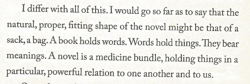
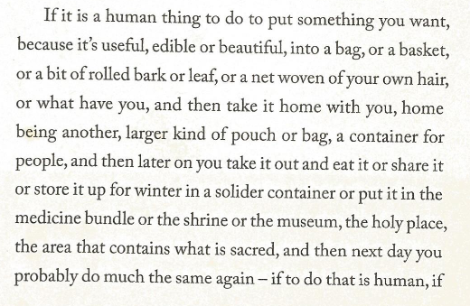
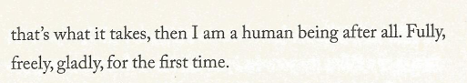

Carrier Bag Theory of Fiction - Ursula Le Guin
is my favourite essays of all time. I think this page needs to be a Shrine one day, but ah well. When I have time and energy, I'll make a beautifully formatted CSS page.
Basically, the carrier bag theory suggests that the shape of a story is not a spear (like the hero's journey would suggest) but a bag.
Le Guin says it better herself, in response to the hypoethesis that the shape of the novel is an arrow, or a spear:
I think that this is very much the shape of the golden record, for me. I just bundle up all the things in my life and show them to you.
I show you Kumara, my tomatoes, public domain, frutiger aero. I show you the sounds of the sea from different points in the world.
 Source: Le Guin, Ursula. The Carrier Bag Theory of Fiction, Ingota, 2019.